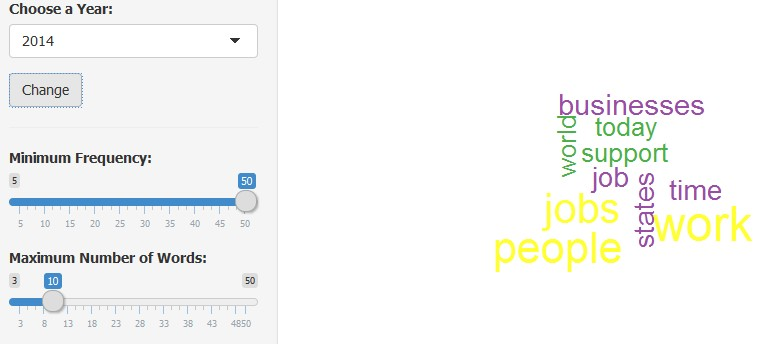
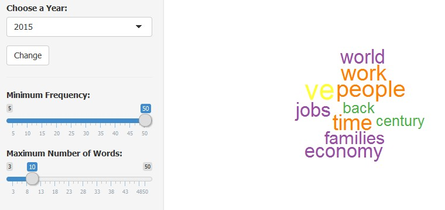

What is this application about?
Finding prominent words which are used in the speech of
President Barack Obamas State of the Union Address from 2015 to 2009.
Word size (larger = more frequently used) gives a clue what was the major area the speech is covering.
Is the Application runs with default year ( on start up ) ?
Yes. It runs with the following default values.
Choose a Year = 2015
Minimum Frequency = 50
Maximum Number of Words = 50
How to use the Application?
1. Choose a Year from the drop down list and click change button.
2. Slide the bar on Minimum Frequency
3. Slide the bar on Maximum Number of Words
Do you have a demo?
Yes.
Step1:
Choose a Year = 2014,
click change button.
Minimum Frequency = 50
Maximum Number of Words = 10
Observer the cloud

Step2:
Choose a Year = 2015, click change button.
Observer the cloud

Step3:
Repeated step2 for year 2013 to 2009
Final Observation:
Out of seven years speeches it's all about :
jobs, work, people, economy